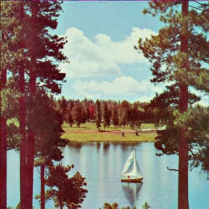

<!DOCTYPE html>
<html>
<meta charset="utf-8">
<style>
#svg-filter { display: none; }
img { display: block; width: 90%; }
img {
  -webkit-filter: url(#svg-blur);
}
</style>
<section>

<!-- SVG Blur Filter -->
<!-- 'stdDeviation' is the blur amount applied -->
<svg id="svg-filter">
  <filter id="svg-blur">
    <feGaussianBlur in="SourceGraphic" stdDeviation="4"></feGaussianBlur>
  </filter>
</svg>
</section>
</html>
